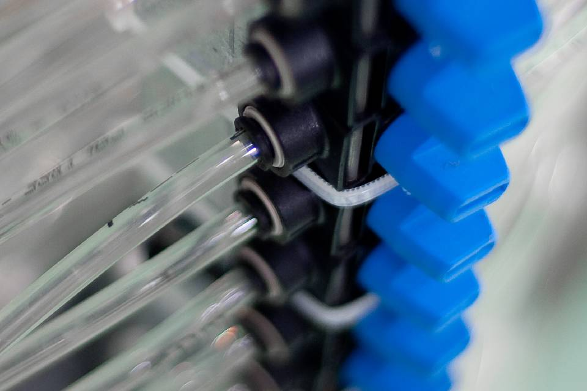
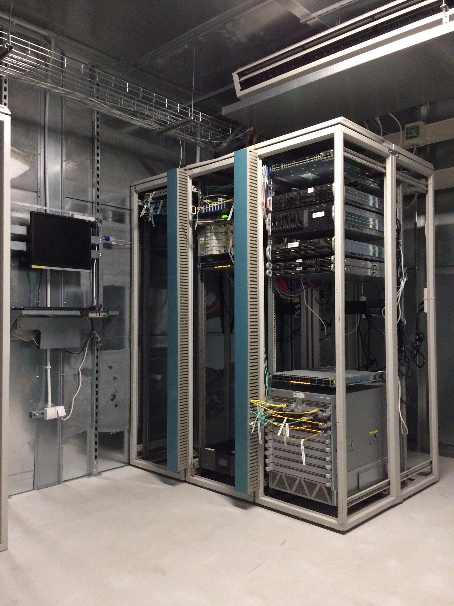
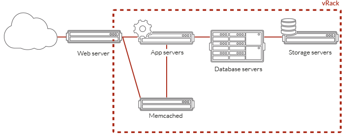
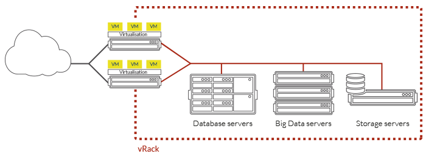
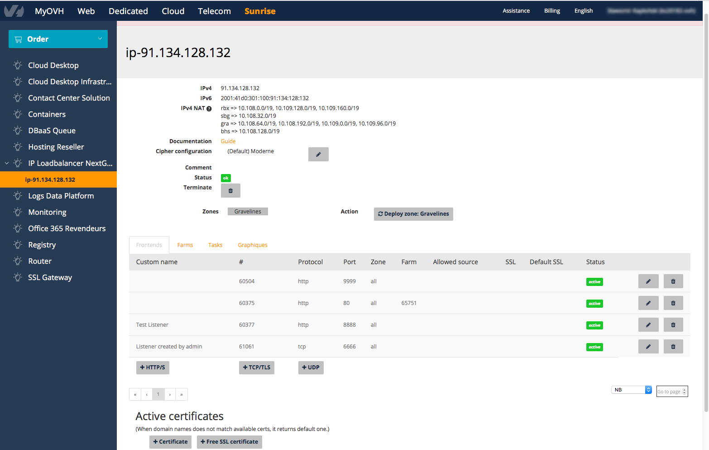
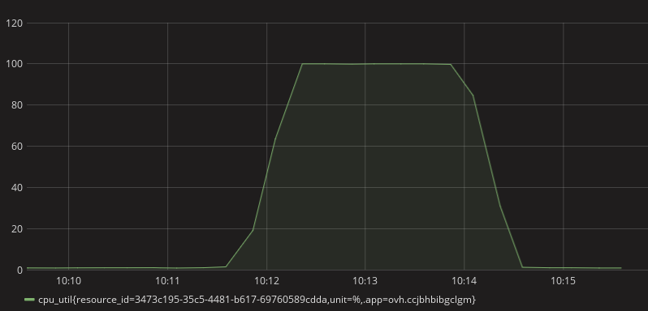
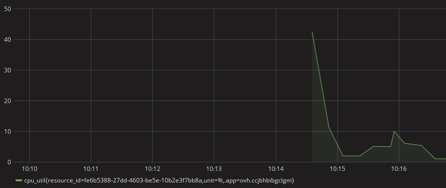

class: center, bottom, regular, title # Chmura hybrydowa # Public Cloud OVH Sławomir Kapłoński & Paweł Suder 7.11.2017 --- class: center, middle, regular # OVH Krótki przegląd --- class: center, middle, regular ## OVH w liczbach ----- <div class="container"> <div class="row"> <div class="col"> </img> </div> <div class="col"> </img> </div> <div class="col"> </img> </div> </div> <div class="row"> <div class="col"> Start w 1999 r. </div> <div class="col"> W Polsce od 2004 r. </div> <div class="col"> Ponad 2000 pracowników w OVH w 19 krajach We Wrocławiu ponad 70 </div> </div> </div> ----- --- class: center, middle, regular ## OVH w liczbach ----- <div class="container"> <div class="row"> <div class="col"> </img> </div> <div class="col"> </img> </div> <div class="col"> </img> </div> </div> <div class="row"> <div class="col"> Ponad 1 mln klientów </div> <div class="col"> Ponad 60% klientów to profesjonaliści i resellerzy </div> <div class="col"> Klienci z blisko 140 krajów </div> </div> </div> ----- --- class: center, middle, regular ## OVH na mapie -----  ----- --- class: center, middle, regular ## Innowacje w OVH DC Roubaix </img> Pierwsze centrum bez klimatyzacji --- class: center, middle, regular ## Innowacje w OVH Chłodzenie ----- <div class="container"> <div class="row"> <div class="col"> </img> </div> <div class="col"> </img> </div> </div> </div> ----- Zastosowane chłodzenie wodą i powietrzem Jedynie 10W zużywane jest na schłodzenie 100W serwera --- class: center, middle, regular ## Innowacje w OVH Odnawialne źródła energii ----- </img> ----- Zainwestowaliśmy ponad 15 mln € w odnawialne źródła energii --- class: center, middle, regular ## Innowacje w OVH Własne serwery ----- </img> ----- OVH produkuje swoje własne serwery i dysponuje kilkoma liniami produkcyjnymi we Francji i w Kanadzie. --- class: center, middle, regular ## Innowacje w OVH DC Strasbourg ----- <img src="images/sbg1.jpg" style="width: 80%"></img> ----- Budowa DC Zastosowanie kontenerów do budowy centrum --- class: center, middle, regular # OVH w Polsce Nowe DC OVH --- class: center, middle, regular ## Nowe DC w Ożarowie Mazowieckim ----- </img> ----- _Octave: DC WAW1 in Warsaw: Room 0 for the routing gears._ <!-- <div class="link" url="https://twitter.com/olesovhcom/status/827039870304604160"></div> --> --- class: center, middle, regular ## Nowe DC w Ożarowie Mazowieckim ----- <img src="images/IMG_2003.JPG" style="width: 75%"></img> ----- --- class: regular # OVH w Polsce ----- <div class="center"> Produkty hostowane w Polsce </div> ----- <div class="container"> <div class="row" style="padding: 2em"> <div class="col center"> <div class="icn icn-publicCloud"></div> Public Cloud </div> <div class="col center"> <div class="icn icn-privateCloud"></div> Private Cloud </div> </div> <div class="row" style="padding: 2em"> <div class="col center"> <div class="icn icn-vps"></div> VPS </div> <div class="col center"> <div class="icn icn-dedicated"></div> Dedykowane serwery </div> </div> </div> --- class: center, middle, regular # Public Cloud --- class: regular # Public Cloud ----- <div class="center"> Co nas wyróżnia? </div> ----- - OpenStack API - OpenStack Newton m.in. regionie WAW - Local SSD storage - Block storage oparty o CEPH - integracja z usługami OVH - ochrona Anti-DDoS <!-- <div class="link" url="https://www.ovh.pl/public-cloud/instances/"></div> --> ??? PCI w OVH to: * Infra oparta o OpenStack * API OpenStack - daje to możliwość korzystania z narzędzi i skryptów (ansible, terraform, itd.) * WAW to wersja Newton - planujemy wkrótce upgrade do Ocata i później następne * Dyski instancji na lokalnych dyskach SSD: * <b>plus</b>: wydajność * <b>minus</b>: utrudniona migracja, nie da się szybko przywrócić VMki po padzie hosta * Block storage (volumeny Cinder'a) oparty o CEPH - można szybko przepiąć z jednej VMki do innej * instancje PCI zintegrowane z innymi usługami OVH - o czym będziemy mówić dokładniej za chwilę * ochrona Anti-DDoS - tak jak na dedykach --- class: regular # Public Cloud ----- <div class="center"> Sieć publiczna w OVH PCI </div> ----- - Publiczne adresy IP skonfigurowane bezpośrednio na instancji - Brak ruchu L2 na interfejsie instancji - Możliwość korzystania z adresów IP FailOver na instancjach PCI - brak klasycznego <i>Network node'a</i> <pre style="font-size: 0.45em;"> ~ » nova list +--------------------------------------+----------+--------+------------+-------------+-------------------------------------------------+ | ID | Name | Status | Task State | Power State | Networks | +--------------------------------------+----------+--------+------------+-------------+-------------------------------------------------+ | 0e75229b-e68f-410a-93cd-65f7879a6955 | WAW-VM-1 | ACTIVE | - | Running | Ext-Net=<span class="green">145.239.30.245</span>, 2001:41d0:601:2000::2db | +--------------------------------------+----------+--------+------------+-------------+-------------------------------------------------+ </pre> <pre style="font-size: 0.5em;"> ubuntu@waw-vm-1:~$ ip a show ens3 2: ens3: <BROADCAST,MULTICAST,UP,LOWER_UP> mtu 1500 qdisc pfifo_fast state UP group default qlen 1000 link/ether fa:16:3e:3d:15:76 brd ff:ff:ff:ff:ff:ff inet <span class="green">145.239.30.245/32</span> brd 145.239.30.245 scope global ens3 valid_lft forever preferred_lft forever inet6 fe80::f816:3eff:fe3d:1576/64 scope link valid_lft forever preferred_lft forever ubuntu@waw-vm-1:~$ ip route default via 145.239.28.1 dev ens3 145.239.28.1 dev ens3 scope link </pre> ??? * Sieć to najbardziej _zmieniona_ część naszego OpenStack'a - całe API jest zgodne z OpenStack * każda z instancji posiada adres sieci publicznej; brak klasycznego, Neutron'owego network node'a * adres sieci publicznej ma maskę /32; brak ruchu rozgłoszeniowego (L2) na interfejsie instancji * ruch między siecią OVH a zewnetrzną jest chroniony przez Anti-DDoS * możliwość podpięcia adresów IP Failover z OVH do VMek - np. przeniesienie adresu IP z serwera dedykowanego * pokazana VMka z publicznym IP i config "wewnątrz" --- class: regular # Public Cloud ----- <div class="center"> Sieć prywatna w OVH - vRack </div> ----- <div class="center" style="padding-top: 20px"> </img> <div> Prywatne połączenie wszystkich serwerowni OVH na świecie </div> </div> ??? * sieć prywatna (tenant network) oparta o usługę vRack OVH, * vrack to technologia OVH pozwalająca na połączenie prywatną siecią L2 swoich usług, * pierwotnie tylko dedyki w obrębie jednego DC i jeden vlan, teraz już różne usługi w różnych DC --- class: regular # Public Cloud ----- <div class="center"> Sieć prywatna w OVH - vRack </div> ----- <div class="center" style="padding-top: 10px"> </img> <div> vRack pozwala na odizolowanie najważniejszych serwerów w ramach prywatnej sieci VLAN.<br /> Twoje dane są zabezpieczone a komunikacja między serwerami nie odbywa się za pomocą sieci publicznej. </div> </div> ??? * Można wdrożyć aż do 4000 prywatnych sieci VLAN. * tworzenie sieci np. wg ich przeznaczenia: sieć dla połączeń z backupami, sieć dla połączeń z db itd. --- class: regular # Public Cloud ----- <div class="center"> Sieć prywatna w OVH - vRack </div> ----- <div class="center" style="padding-top: 10px"> </img> <div> Możliwe połączenie Public Cloud z serwerami dedykowanymi. </div> </div> ??? * Możliwe jest podłączenie VMek z serwerami dedykowanymi tworząc <b>Infrastrukturę hybrydową</b> * Do serwerów dedykowanych łącze trunk, a do instancji Public Cloud - wiele interfejsów różnych sieci prywatnych - nie znają vlan_id --- class: regular # Public Cloud ----- <div class="center"> Sieć prywatna w OVH - vRack </div> ----- <pre style="font-size: 0.45em;"> ~ » neutron net-show Local-Net +--------------------------+--------------------------------------+ | Field | Value | +--------------------------+--------------------------------------+ | admin_state_up | True | | description | | | id | d02876b3-0065-4b72-8aba-2cf8360d8a37 | | mtu | 9000 | | name | Local-Net | | <span class="red">provider:network_type</span> | <span class="red">vrack</span> | | <span class="red">provider:segmentation_id</span> | <span class="red">1000</span> | | status | ACTIVE | | subnets | 352d9782-55df-46c0-93fc-ab7cff83951d | +--------------------------+--------------------------------------+ ~ » </pre> <pre style="font-size: 0.45em;"> ~ » neutron subnet-show 352d9782-55df-46c0-93fc-ab7cff83951d +-------------------+----------------------------------------------------+ | Field | Value | +-------------------+----------------------------------------------------+ | <span class="red">allocation_pools</span> | <span class="red">{"start": "192.168.0.214", "end": "192.168.0.254"}</span> | | cidr | 192.168.0.0/24 | | dns_nameservers | | | enable_dhcp | True | | gateway_ip | | | host_routes | | | id | 352d9782-55df-46c0-93fc-ab7cff83951d | | ip_version | 4 | | network_id | d02876b3-0065-4b72-8aba-2cf8360d8a37 | +-------------------+----------------------------------------------------+ </pre> ??? Sieć bazująca na Vrack'u w OpenStack, * Tu sieć utworzona w WAW, ale praktycznie taka sama sieć i podsieć jest też utworzona w BHS * subnet - taki sam utworzony jest w obu regionach, różne są tylko <i>allocation pool'e</i> tak aby nie było overlappingu adresów IP przydzielanych przez Neutron'a w różnych regionach * ważny jest ten sam segmentation_id - w sieci "inter region" musi być taki sam w każdym regionie; można to zrobić z poziomu panelu manager OVH --- class: regular # Public Cloud ----- <div class="center"> Sieć prywatna w OVH - vRack </div> ----- <pre style="font-size: 0.45em;"> ~ » nova interface-attach WAW-VM-1 --net-id d02876b3-0065-4b72-8aba-2cf8360d8a37 ~ » nova list +--------------------------------------+----------+--------+------------+-------------+-------------------------------------------------+ | ID | Name | Status | Task State | Power State | Networks | +--------------------------------------+----------+--------+------------+-------------+-------------------------------------------------+ | 0e75229b-e68f-410a-93cd-65f7879a6955 | WAW-VM-1 | ACTIVE | - | Running | Ext-Net=145.239.30.245, 2001:41d0:601:2000::2db | | | | | | | Local-Net=<span class="green">192.168.0.222</span> | +--------------------------------------+----------+--------+------------+-------------+-------------------------------------------------+ </pre> <pre style="font-size: 0.45em;"> ~ » nova list +--------------------------------------+----------+--------+------------+-------------+---------------------------------------------------+ | ID | Name | Status | Task State | Power State | Networks | +--------------------------------------+----------+--------+------------+-------------+---------------------------------------------------+ | 8c193736-b98f-4c5d-b9b1-0186b507b293 | BHS-VM-1 | ACTIVE | - | Running | Ext-Net=142.44.244.158, 2607:5300:201:2100::3:cc9c| | | | | | | Local-Net=<span class="green">192.168.0.2</span> | +--------------------------------------+----------+--------+------------+-------------+---------------------------------------------------+ ??? W praktyce: * do VMki z WAW dodajemy nowy interfejs z siecią lokalną (to net_id jest to samo co na poprzednich slajdach) * jest też druga, podobna VMka w BHS - sieć tam zrobiona ma to samo segmentation_id (1000) jak ta sieć w WAW * tak samo mógłby być w tym vracku dodany dedyk i mieć interfejs eth1.1000 normalnie by się "widział" z tymi VMkami --- class: regular # Public Cloud ----- <div class="center"> Sieć prywatna w OVH - vRack </div> ----- <pre style="font-size: 0.5em;"> ubuntu@waw-vm-1:~$ mtr -r -c 1 <span class="green">192.168.0.2</span> Start: Tue Oct 31 14:08:45 2017 HOST: waw-vm-1 Loss% Snt Last Avg Best Wrst StDev 1.|-- 192.168.0.2 0.0% 1 109.3 109.3 109.3 109.3 0.0 </pre> <pre style="font-size: 0.5em;"> ubuntu@waw-vm-1:~$ mtr -r -c 1 <span class="red">142.44.244.158</span> Start: Tue Oct 31 14:09:28 2017 HOST: waw-vm-1 Loss% Snt Last Avg Best Wrst StDev 1.|-- 145.239.28.1 0.0% 1 0.1 0.1 0.1 0.1 0.0 2.|-- 192.168.250.254 0.0% 1 0.1 0.1 0.1 0.1 0.0 3.|-- 10.13.14.190 0.0% 1 0.2 0.2 0.2 0.2 0.0 4.|-- 10.13.0.220 0.0% 1 0.3 0.3 0.3 0.3 0.0 5.|-- 10.95.100.0 0.0% 1 0.3 0.3 0.3 0.3 0.0 6.|-- vl1067.var-6-a72.pl.eu 0.0% 1 0.8 0.8 0.8 0.8 0.0 7.|-- be100-1102.fra-1-a9.de.eu 0.0% 1 21.6 21.6 21.6 21.6 0.0 8.|-- rbx-g1-nc5.fr.eu 0.0% 1 30.3 30.3 30.3 30.3 0.0 9.|-- 10.95.64.1 0.0% 1 28.8 28.8 28.8 28.8 0.0 10.|-- vl1304.bhs-g1-a75.qc.ca 0.0% 1 106.9 106.9 106.9 106.9 0.0 11.|-- be5.bhs-z2g2-a75.qc.ca 0.0% 1 106.9 106.9 106.9 106.9 0.0 12.|-- 10.98.243.64 0.0% 1 107.0 107.0 107.0 107.0 0.0 13.|-- 149.56.50.176 0.0% 1 106.7 106.7 106.7 106.7 0.0 14.|-- 158.69.61.3 0.0% 1 106.6 106.6 106.6 106.6 0.0 15.|-- 142.44.244.158 0.0% 1 106.8 106.8 106.8 106.8 0.0 </pre> ??? No i teraz komunikacja pomiędzy tymi VMkami jest możliwa :) Podsumowując: * Technologia vRack (wirtualna szafa) pozwala na podłączenie, odizolowanie i rozdzielenie usług OVH w ramach jednej lub kilku prywatnych i zabezpieczonych sieci L2!!! --- class: center, middle, regular # Planowane usługi --- class: regular # Public Cloud ----- <div class="center"> Load Balancer - OVH IPLB </div> ----- - usługa OVH IPLB - OpenStack Neutron LBaaS API 2.0 - zarządzanie usługą IPLB zarówno przez API OVH i OpenStack ??? * Po pierwsze (najbliżej wdrożenia chyba) LBaaS * Loadbalancer to usługa rozdzielająca ruch pomiędzy serwery * Trwają prace nad integracją produktu OVH IPLB z OpenStack LBaaS API 2.0; pozwoli na zarządzanie load balancerem z poziomu OpenStack API. --- class: regular # Public Cloud ----- <div class="center"> Load Balancer - OVH IPLB </div> ----- <div class="center"> </img> </div> ??? * Zarządzanie IPLB w panelu OVH * Aktualnie już dostępne dla klientów (Beta) * Można dodawać również VMki z PCI jako serwery backend * Brak wsparcia dla vRack jeszcze --- class: regular # Public Cloud ----- <div class="center"> Load Balancer - Neutron LBaaS 2.0 </div> ----- <pre style="font-size: 0.45em;"> ~ » neutron lbaas-loadbalancer-list +--------------------------------------+-------------------+----------------+---------------------+ | id | name | vip_address | provisioning_status | +--------------------------------------+-------------------+----------------+---------------------+ | b99d4f35-8afc-4c92-99a5-8015be1029ee | ip-91.134.128.132 | 91.134.128.132 | ACTIVE | +--------------------------------------+-------------------+----------------+---------------------+ </pre> <pre style="font-size: 0.45em;"> ~ » neutron lbaas-listener-list +--------------------------------------+-----------------+---------------------+----------+---------------+----------------+ | id | default_pool_id | name | protocol | protocol_port | admin_state_up | +--------------------------------------+-----------------+---------------------+----------+---------------+----------------+ | 51245091-5ae3-dd35-f865-d96967bd03ef | | tcp/frontend/61061 | TCP | 6666 | True | | c3cf62c1-924e-a79f-70c0-e2008706a5f3 | | http/frontend/60504 | HTTP | 9999 | True | | 55b83304-1efa-631e-8903-58702c1cb8f6 | | http/frontend/60375 | HTTP | 80 | True | | 62b3d7bb-9691-cc5f-5e72-21123169c567 | | http/frontend/60377 | HTTP | 8888 | True | +--------------------------------------+-----------------+---------------------+----------+---------------+----------------+ </pre> ??? * Tak ma to wyglądać :) * Zarządzanie przez API OpenStack'a * Oczywiście wszystkie create/update/delete call'e do LBaaS (listener, pool, member) są możliwe. * Nie da się zrobić "create loadbalancer" bo to trzeba w panelu OVH zrobić tylko. * Wszystkie zmiany zrobione jedną z tych metod są widoczne od razu przez drugi z interfejsów --- class: regular # Telemetria ----- Usługa pozwalająca na dostarczenie informacji o zużyciu zasobów oraz aktualnym obciążeniu. Trwają prace nad integracją obecnego systemu metryk z OpenStack. Pozwoli to na pobieranie danych z poziomu OpenStack API. --- class: center, middle, regular ## Telemetria #### Przykładowe metryki ----- <pre> $ nova list +--------------------------------------+------------------+--------+ | ID | Name | Status | +--------------------------------------+------------------+--------+ | 1e6c8de0-6ffe-422b-9729-968606f8a31b | testing_instance | ACTIVE | +--------------------------------------+------------------+--------+ </pre> <pre style="font-size: 0.45em;"> $ gnocchi resource list -c id -c type -c original_resource_id +--------------------------------------+----------------------------+-----------------------------------------------------------------------+ | id | type | original_resource_id | +--------------------------------------+----------------------------+-----------------------------------------------------------------------+ | 1e6c8de0-6ffe-422b-9729-968606f8a31b | instance | 1e6c8de0-6ffe-422b-9729-968606f8a31b | | 74101fe3-6aed-5e45-ae1e-05226c5053d6 | instance_network_interface | instance-00000001-1e6c8de0-6ffe-422b-9729-968606f8a31b-tap58d2b129-ad | | b85b3778-95ea-5b21-8f8b-48ca8477e224 | instance_disk | 1e6c8de0-6ffe-422b-9729-968606f8a31b-vda | +--------------------------------------+----------------------------+-----------------------------------------------------------------------+ </pre> <pre style="font-size: 0.4em;"> $ gnocchi metric list | grep 1e6c8de0-6ffe-422b-9729-968606f8a31b | grep cpu_util +--------------------------------------+---------------------+---------------------------------+---------+--------------------------------------+ | id | archive_policy/name | name | unit | resource_id | +--------------------------------------+---------------------+---------------------------------+---------+--------------------------------------+ | ba9359a1-0a22-4355-995b-085f6ee51089 | ovh | cpu_util | None | 1e6c8de0-6ffe-422b-9729-968606f8a31b | +--------------------------------------+---------------------+---------------------------------+---------+--------------------------------------+ </pre> --- class: center, middle, regular ## Telemetria #### Przykładowe metryki ----- <pre> $ gnocchi measures show ba9359a1-0a22-4355-995b-085f6ee51089 +---------------------------+-------------+---------------+ | timestamp | granularity | value | +---------------------------+-------------+---------------+ | 2017-10-30T20:31:20+00:00 | 1.0 | 0.7906971621 | | 2017-10-30T20:31:04+00:00 | 1.0 | 0.8331819372 | | 2017-10-30T20:30:56+00:00 | 1.0 | 0.8397322547 | | 2017-10-30T20:30:50+00:00 | 1.0 | 0.8333364261 | | 2017-10-30T20:30:34+00:00 | 1.0 | 0.8161961264 | | 2017-10-30T20:30:20+00:00 | 1.0 | 0.800532321 | | 2017-10-30T20:30:04+00:00 | 1.0 | 0.8000285929 | | 2017-10-30T20:29:50+00:00 | 1.0 | 0.8173879552 | | 2017-10-30T20:29:33+00:00 | 1.0 | 5.96562261 | | 2017-10-30T20:29:20+00:00 | 1.0 | 6.3457825867 | | 2017-10-30T20:29:04+00:00 | 1.0 | 6.7974552858 | | 2017-10-30T20:28:50+00:00 | 1.0 | 16.7978234661 | | 2017-10-30T20:28:34+00:00 | 1.0 | 39.6572404722 | +---------------------------+-------------+---------------+ </pre> --- class: center, middle, regular ## Telemetria #### Przykładowe metryki -----  ----- Grafana dostępna jest z poziomu Manager --- class: regular # Automatyzacja ----- Usługi OpenStack Aodh oraz Heat bazują na danych z metrykach i pozwalają na automatyzację zarządzania cloudem. Alarmy wyzwalane są przy określonych wartościach metryk. Określone alarmy powodują akcje, którymi mogą być dynamiczne dodawanie lub usuwanie instancji. --- class: center, middle, regular ## Automatyzacja #### Przykład użycia ----- <pre style="font-size: 0.4em"> $ openstack stack list +--------------------------------------+---------------+----------------------------------+-----------------+----------------------+--------------+ | ID | Stack Name | Project | Stack Status | Creation Time | Updated Time | +--------------------------------------+---------------+----------------------------------+-----------------+----------------------+--------------+ | 9299ada4-20e7-4682-b8ba-3f9517646472 | testing_stack | 853de3a604084184bfa18948220f309b | CREATE_COMPLETE | 2017-10-31T08:51:24Z | None | +--------------------------------------+---------------+----------------------------------+-----------------+----------------------+--------------+ </pre> <pre style="font-size: 0.4em"> $ nova list +--------------------------------------+-------------------------------------------------------+--------+------------+-------------+--------------: | ID | Name | Status | Task State | Power State | Networks : +--------------------------------------+-------------------------------------------------------+--------+------------+-------------+--------------: | 42de4c5b-be90-4971-9c06-cd7188bba928 | te-g_stack-asg-oh2uc3a6pztc-rcnrmap2iroe-nimt3jfhue7g | ACTIVE | - | Running | private=fdab:: +--------------------------------------+-------------------------------------------------------+--------+------------+-------------+--------------: </pre> <pre style="font-size: 0.4em"> $ aodh alarm list +--------------------------------------+--------------------------------------------+-------------------------------------------+-------+---------: | alarm_id | type | name | state | severity: +--------------------------------------+--------------------------------------------+-------------------------------------------+-------+---------: | f16d3bb5-babe-4b13-898e-1c20a1e91684 | gnocchi_aggregation_by_resources_threshold | testing_stack-cpu_alarm_high-tvou3zg7su5l | ok | low : | 2b2067bc-786e-4a19-964d-d0a2e918f8a0 | gnocchi_aggregation_by_resources_threshold | testing_stack-cpu_alarm_low-lwv3gpmv44x2 | alarm | low : +--------------------------------------+--------------------------------------------+-------------------------------------------+-------+---------: </pre> --- class: center, middle, regular ## Automatyzacja #### Przykład użycia ----- <pre style="font-size: 0.6em"> $ gnocchi measures aggregation \ --resource-type instance \ --query ''server_group="9299ada4-20e7-4682-b8ba-3f9517646472"'' \ --aggregation mean -m cpu_util \ --start "-5 m" --stop now \ --needed-overlap 0 --granularity 15 +---------------------------+-------------+---------------+ | timestamp | granularity | value | +---------------------------+-------------+---------------+ ........................................................... | 2017-10-31T09:11:15+00:00 | 15.0 | 0.8114249292 | | 2017-10-31T09:11:30+00:00 | 15.0 | 0.9610490475 | | 2017-10-31T09:11:45+00:00 | 15.0 | 1.3871397001 | | 2017-10-31T09:12:00+00:00 | 15.0 | 19.1047855617 | +---------------------------+-------------+---------------+ </pre> <pre style="font-size: 0.4em"> $ aodh alarm list +--------------------------------------+--------------------------------------------+-------------------------------------------+-------+----------: | alarm_id | type | name | state | severity : +--------------------------------------+--------------------------------------------+-------------------------------------------+-------+----------: | f16d3bb5-babe-4b13-898e-1c20a1e91684 | gnocchi_aggregation_by_resources_threshold | testing_stack-cpu_alarm_high-tvou3zg7su5l | ok | low : | 2b2067bc-786e-4a19-964d-d0a2e918f8a0 | gnocchi_aggregation_by_resources_threshold | testing_stack-cpu_alarm_low-lwv3gpmv44x2 | alarm | low : +--------------------------------------+--------------------------------------------+-------------------------------------------+-------+----------: </pre> --- class: center, middle, regular ## Automatyzacja #### Przykład użycia ----- <pre style="font-size: 0.6em"> $ gnocchi measures aggregation \ --resource-type instance \ --query ''server_group="9299ada4-20e7-4682-b8ba-3f9517646472"'' \ --aggregation mean -m cpu_util \ --start "-5 m" --stop now \ --needed-overlap 0 --granularity 15 +---------------------------+-------------+---------------+ | timestamp | granularity | value | +---------------------------+-------------+---------------+ ........................................................... | 2017-10-31T09:11:30+00:00 | 15.0 | 0.9610490475 | | 2017-10-31T09:11:45+00:00 | 15.0 | 1.3871397001 | | 2017-10-31T09:12:00+00:00 | 15.0 | 19.1047855617 | | 2017-10-31T09:12:15+00:00 | 15.0 | 63.525273101 | +---------------------------+-------------+---------------+ </pre> <pre style="font-size: 0.4em"> $ aodh alarm list +--------------------------------------+--------------------------------------------+-------------------------------------------+-------+----------: | alarm_id | type | name | state | severity : +--------------------------------------+--------------------------------------------+-------------------------------------------+-------+----------: | f16d3bb5-babe-4b13-898e-1c20a1e91684 | gnocchi_aggregation_by_resources_threshold | testing_stack-cpu_alarm_high-tvou3zg7su5l | ok | low : | 2b2067bc-786e-4a19-964d-d0a2e918f8a0 | gnocchi_aggregation_by_resources_threshold | testing_stack-cpu_alarm_low-lwv3gpmv44x2 | ok | low : +--------------------------------------+--------------------------------------------+-------------------------------------------+-------+----------: </pre> --- class: center, middle, regular ## Automatyzacja #### Przykład użycia ----- <pre style="font-size: 0.6em"> $ gnocchi measures aggregation \ --resource-type instance \ --query ''server_group="9299ada4-20e7-4682-b8ba-3f9517646472"'' \ --aggregation mean -m cpu_util \ --start "-5 m" --stop now \ --needed-overlap 0 --granularity 15 +---------------------------+-------------+---------------+ | timestamp | granularity | value | +---------------------------+-------------+---------------+ ........................................................... | 2017-10-31T09:12:00+00:00 | 15.0 | 19.1047855617 | | 2017-10-31T09:12:15+00:00 | 15.0 | 63.525273101 | | 2017-10-31T09:12:30+00:00 | 15.0 | 100.0 | | 2017-10-31T09:12:45+00:00 | 15.0 | 100.0 | +---------------------------+-------------+---------------+ </pre> <pre style="font-size: 0.4em"> $ aodh alarm list +--------------------------------------+--------------------------------------------+-------------------------------------------+-------+----------: | alarm_id | type | name | state | severity : +--------------------------------------+--------------------------------------------+-------------------------------------------+-------+----------: | f16d3bb5-babe-4b13-898e-1c20a1e91684 | gnocchi_aggregation_by_resources_threshold | testing_stack-cpu_alarm_high-tvou3zg7su5l | ok | low : | 2b2067bc-786e-4a19-964d-d0a2e918f8a0 | gnocchi_aggregation_by_resources_threshold | testing_stack-cpu_alarm_low-lwv3gpmv44x2 | ok | low : +--------------------------------------+--------------------------------------------+-------------------------------------------+-------+----------: </pre> --- class: center, middle, regular ## Automatyzacja #### Przykład użycia ----- <pre style="font-size: 0.6em"> $ gnocchi measures aggregation \ --resource-type instance \ --query ''server_group="9299ada4-20e7-4682-b8ba-3f9517646472"'' \ --aggregation mean -m cpu_util \ --start "-5 m" --stop now \ --needed-overlap 0 --granularity 15 +---------------------------+-------------+---------------+ | timestamp | granularity | value | +---------------------------+-------------+---------------+ ........................................................... | 2017-10-31T09:12:30+00:00 | 15.0 | 100.0 | | 2017-10-31T09:12:45+00:00 | 15.0 | 100.0 | | 2017-10-31T09:13:00+00:00 | 15.0 | 99.8563531989 | | 2017-10-31T09:13:15+00:00 | 15.0 | 100.0 | +---------------------------+-------------+---------------+ </pre> <pre style="font-size: 0.4em"> $ aodh alarm list +--------------------------------------+--------------------------------------------+-------------------------------------------+-------+----------: | alarm_id | type | name | state | severity : +--------------------------------------+--------------------------------------------+-------------------------------------------+-------+----------: | f16d3bb5-babe-4b13-898e-1c20a1e91684 | gnocchi_aggregation_by_resources_threshold | testing_stack-cpu_alarm_high-tvou3zg7su5l | alarm | low : | 2b2067bc-786e-4a19-964d-d0a2e918f8a0 | gnocchi_aggregation_by_resources_threshold | testing_stack-cpu_alarm_low-lwv3gpmv44x2 | ok | low : +--------------------------------------+--------------------------------------------+-------------------------------------------+-------+----------: </pre> --- class: center, middle, regular ## Automatyzacja #### Przykład użycia ----- <pre style="font-size: 0.45em"> $ nova list +--------------------------------------+-------------------------------------------------------+--------+------------+-------------+-----------: | ID | Name | Status | Task State | Power State | Networks : +--------------------------------------+-------------------------------------------------------+--------+------------+-------------+-----------: | fe6b5388-27dd-4603-be5e-10b2e3f7bb8a | te-g_stack-asg-oh2uc3a6pztc-47aplmox5upl-bs6dzk6io7px | BUILD | spawning | NOSTATE | : | 3473c195-35c5-4481-b617-69760589cdda | te-g_stack-asg-oh2uc3a6pztc-f6nokdv7p43p-llk5gfli7fqe | ACTIVE | - | Running | private=fd: +--------------------------------------+-------------------------------------------------------+--------+------------+-------------+-----------: </pre> --- class: center, middle, regular ## Automatyzacja #### Przykład użycia ---- <pre style="font-size: 0.45em"> $ nova list +--------------------------------------+-------------------------------------------------------+--------+------------+-------------+-----------: | ID | Name | Status | Task State | Power State | Networks : +--------------------------------------+-------------------------------------------------------+--------+------------+-------------+-----------: | fe6b5388-27dd-4603-be5e-10b2e3f7bb8a | te-g_stack-asg-oh2uc3a6pztc-47aplmox5upl-bs6dzk6io7px | ACTIVE | - | Running | private=fd: | 3473c195-35c5-4481-b617-69760589cdda | te-g_stack-asg-oh2uc3a6pztc-f6nokdv7p43p-llk5gfli7fqe | ACTIVE | - | Running | private=fd: +--------------------------------------+-------------------------------------------------------+--------+------------+-------------+-----------: </pre> --- class: center, middle, regular ## Automatyzacja #### Przykład użycia ----- <pre style="font-size: 0.6em"> $ gnocchi measures aggregation \ --resource-type instance \ --query ''server_group="9299ada4-20e7-4682-b8ba-3f9517646472"'' \ --aggregation mean -m cpu_util \ --start "-5 m" --stop now \ --needed-overlap 0 --granularity 15 +---------------------------+-------------+---------------+ | timestamp | granularity | value | +---------------------------+-------------+---------------+ ........................................................... | 2017-10-31T09:13:30+00:00 | 15.0 | 100.0 | | 2017-10-31T09:13:45+00:00 | 15.0 | 100.0 | | 2017-10-31T09:14:00+00:00 | 15.0 | 99.7595040144 | | 2017-10-31T09:14:15+00:00 | 15.0 | 84.6924908101 | | 2017-10-31T09:14:30+00:00 | 15.0 | 30.9673945193 | | 2017-10-31T09:14:45+00:00 | 15.0 | 21.8027558178 | | 2017-10-31T09:15:00+00:00 | 15.0 | 6.0431264803 | | 2017-10-31T09:15:15+00:00 | 15.0 | 1.44324279385 | | 2017-10-31T09:15:30+00:00 | 15.0 | 1.9409027766 | +---------------------------+-------------+---------------+ </pre> --- class: center, middle, regular ## Automatyzacja #### Przykład użycia ----- <pre style="font-size: 0.45em"> $ nova list +--------------------------------------+-------------------------------------------------------+--------+------------+-------------+-----------: | ID | Name | Status | Task State | Power State | Networks : +--------------------------------------+-------------------------------------------------------+--------+------------+-------------+-----------: | fe6b5388-27dd-4603-be5e-10b2e3f7bb8a | te-g_stack-asg-oh2uc3a6pztc-47aplmox5upl-bs6dzk6io7px | ACTIVE | - | Running | private=fd: +--------------------------------------+-------------------------------------------------------+--------+------------+-------------+-----------: </pre> <pre style="font-size: 0.4em"> $ aodh alarm list +--------------------------------------+--------------------------------------------+-------------------------------------------+-------+----------: | alarm_id | type | name | state | severity : +--------------------------------------+--------------------------------------------+-------------------------------------------+-------+----------: | f16d3bb5-babe-4b13-898e-1c20a1e91684 | gnocchi_aggregation_by_resources_threshold | testing_stack-cpu_alarm_high-tvou3zg7su5l | ok | low : | 2b2067bc-786e-4a19-964d-d0a2e918f8a0 | gnocchi_aggregation_by_resources_threshold | testing_stack-cpu_alarm_low-lwv3gpmv44x2 | alarm | low : +--------------------------------------+--------------------------------------------+-------------------------------------------+-------+----------: </pre> --- class: center, middle, regular ## Automatyzacja #### Przykład użycia ----- </img> </img> --- class: center, middle, regular ## Pytania --- class: center, middle, regular ## Dziękujemy